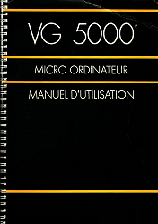

DCVG5K v2 : Radiola-Philips-Shneider VG5000 emulator
DCVG5K v2 is a VG5000 emulator created by Daniel Coulom (mail to danielcoulom at gmail dot com).
DCVG5K web site is dcvg5k.free.fr.

Picture © 2005 - Vincent Coulom
Fonctions
DCVG5K v2 emulates :
- VG5000 central unit powered by Zilog Z80 microprocessor.
- System monitor and built-in Basic interpreter.
- Memory expansion cartridge.
- Two joysticks with their controller.
- Tape reader and writer, tapes being emulated with .k7 files.
- Printer unit (with a file).
User interface comes with two languages : English and French.
Technical tips
DCVG5K v2 is a free software.
- It is distributed under the terms of the GNU GPL (more in the official licence)
- It is programmed with the C language
- It uses SDL library for audio and video.
- It uses SDL_ttf library with Bitstream Vera font.
- It uses Marat Fayzullin's Z80 emulator and dasmZ80 disassembler, available at Computer Emulation Resources
- User interface has been designed specially for this project.
- It doesn't use hardware specific or system specific function, to allow easy port.
- It can run with Windows, Linux, Mac-OS and many other systems.
Installation
DCVG5K v2 should run on every PC with a Pentium II or better processor, with an audio adapter, a decent video adapter, running Windows or Linux 1998 or newer release. It also runs on other platforms. The list of compatible systems will be added here, depending on the users feedback.
Tested with :

 To be tested with :
To be tested with :


 and more...
and more...
All platforms
- Create a new folder and name it dcvg5k (or any other name you like).
- Download dcvg5kv2.0.zip or dcvg5kv2.0.tar.gz to this folder.
- Unpack the archive, keeping the directory structure.
- Install SDL and SDL_ttf libraries. Development version is required to compile. Otherwise you just need runtime library.
- Z80 emulator and dasmz80 disassembler licences don't allow source distribution. In order to compile, they have to be downloaded from Computer Emulation Resources to dcvg5k/Z80 subfolder. In Z80.h file, uncomment #define LSB_FIRST or #define MSB_FIRST instruction according to the microprocessor endianness. In dasmz80.c comment out the whole main() function.
- Compile DCVG5K, depending on your operating system (not required with Windows).
- /software subfolder contains VG5000 tape images (.k7 extension). You can add your own files (look also at dcvg5k collection).
Windows
Dcvg5k.exe executable file comes with dcvg5k. It doesn't need to be compiled. Just double-click the dcmo5.exe filename to run dcvg5k. A shortcut may be added to the Desktop or to the Task Bar. Please note : SDL and SDL_ttf libraries must be installed. SDL.dll and SDL_ttf.dll files may be stored in dcvg5k folder, or in any other folder searched for executable programs, ie c:/windows/system32.
Linux
Install SDL and SDL_ttf library, Z80 and dasmZ80 sources as explain in 'All platforms'. Compile dcvg5k with the makefile coming with the distribution. Open a terminal in dcvg5k folder and execute a 'make' command.
Mac-OS
To be continued...
History
- 2008-02-02 : Version 2.0 released
User Guide
Start dcvg5k with the suitable command, depending on your operating system. With Windows, for instance, you can double-click dcvg5k.exe filename or use a shortcut.
Emulator commands
All emulator commands are done through menu bar at the top of the program main window.
- About DCVG5K
Click [?] button on the right of the menu bar.
- Settings
Click [Options] button on the right of the menu bar, and select Settings...
The buttons on the right of each parameter can be used to change the value.
[Restore default values] button initializes all the values.

- Keyboard layout
Click [Options] button on the right of the menu bar, and select Keyboard...
Key codes depend on operating system and keyboard type.
It is not possible recognize every configuration. Default in dcvg5k is a standard French keyboard with Windows XP or Linux. For other configurations the keyboard layout must be redefined. It is a straightforward process : each VG5000 key is emulated with one key of the actual keyboard. Type a key on the keyboard. Matching VG5000 key is shown. If not correct, click the corresponding VG5000 key picture. Repeat this process for all VG5000 keys. Then you should save the customized keyboard layout, and it will be used each time you will run DCVG5K.
- Joystick emulation
Click [Options] button on the right of the menu bar, and select Joysticks...
Joysticks are emulated with the keyboard (use preferably the numeric keypad). For each joystick, four keys have to be choosen for directions and one for fire. Process is exactly the same as for keyboard layout. Please note that the same key can be used for both VG5000 keyboard and VG5000 joystick emulation. Make your choice to avoid mix-up when running a program testing both keyboard and joysticks.
- Tape loading
Click [k7] button of the menu bar...
Tape images (.k7 files in software subfolder) are listed in a clickable menu. Click the file name to load the tape. You can also click [unload] to unload the tape, and [next...] or [back to the beginning] if these lines are displayed. Don't forget to check settings for tape write protection. To make an empty tape, create an empty file in software subfolder, and name it with .k7 extension.
VG5000 commands
Look at 'Manuel d'utilisation du VG5000' (in French).

VG5000 game and program commands
Download user guides from VG5000 software page.
Links
- VG5000 fan's page

- My VG5000 by Carl

{kind=link}